МАСЛЯНЫЙ НАСОС (для моделей с DPF) > СНЯТИЕ |
| 1. ОТСОЕДИНИТЕ ПРОВОД ОТ ОТРИЦАТЕЛЬНОГО ВЫВОДА АККУМУЛЯТОРНОЙ БАТАРЕИ |
| 2. СЛЕЙТЕ МОТОРНОЕ МАСЛО |
Снимите крышку маслоналивной горловины.
Выверните пробку сливного отверстия масляного поддона с прокладкой, а затем слейте моторное масло в емкость.
Протрите масляный поддон и пробку сливного отверстия.
Установите новую прокладку и пробку сливного отверстия масляного поддона.
| 3. СНИМИТЕ НИЖНЮЮ ОБЛИЦОВКУ ПЕРЕДНЕГО БАМПЕРА |
Освободите фиксатор, выверните 5 болтов и снимите нижнюю накладку переднего бампера.
| 4. СНИМИТЕ ЗАЩИТУ КАРТЕРА ДВИГАТЕЛЯ № 1 В СБОРЕ |
Выверните 4 болта и снимите защиту картера двигателя № 1.
| 5. СЛЕЙТЕ ОХЛАЖДАЮЩУЮ ЖИДКОСТЬ ДВИГАТЕЛЯ |
Ослабьте пробку сливного крана радиатора.
| 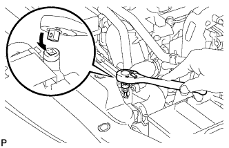 |
Слейте охлаждающую жидкость, сняв пробку расширительного бачка, а затем с помощью ключа снимите вентиляционную пробку.
Ослабьте пробку сливного крана блока цилиндров.

| *1 | Бачок радиатора | *2 | Вентиляционная пробка |
| *3 | Пробка сливного крана радиатора | *4 | Пробка сливного крана блока цилиндров |
| 6. СНИМИТЕ ДВИГАТЕЛЬ В СБОРЕ |
| 7. ЗАКРЕПИТЕ ДВИГАТЕЛЬ НА СТЕНДЕ ДЛЯ ДВИГАТЕЛЯ |
| 8. СНИМИТЕ ПРИВОДНОЙ РЕМЕНЬ ГАЗОРАСПРЕДЕЛЕНИЯ |
| 9. СНИМИТЕ ЭЛЕКТРИЧЕСКИЙ КЛАПАН УПРАВЛЕНИЯ РОГ В СБОРЕ |
| 10. СНИМИТЕ ТОПЛИВНЫЙ НАСОС В СБОРЕ |
| 11. СНИМИТЕ ФОРСУНКУ В СБОРЕ |
| 12. СНИМИТЕ ГЕНЕРАТОР В СБОРЕ |
| 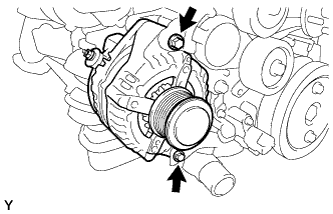 |
Выверните 2 болта и снимите генератор.
| 13. СНИМИТЕ КРОНШТЕЙН ГЕНЕРАТОРА |
 |
Выверните болт и снимите кронштейн генератора.
| 14. СНИМИТЕ ОПОРНЫЙ РОЛИК № 2 В СБОРЕ (для моделей с системой кондиционирования) |
| 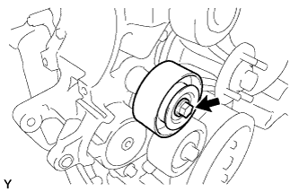 |
Выверните болт и снимите крышку ролика, опорный ролик № 2 и распорную втулку.
| 15. СНИМИТЕ КРОНШТЕЙН КРЕПЛЕНИЯ КОМПРЕССОРА № 1 |
 |
Выверните 5 болтов и снимите кронштейн крепления компрессора № 1.
| 16. СНИМИТЕ ВАКУУМНЫЙ НАСОС В СБОРЕ |
| 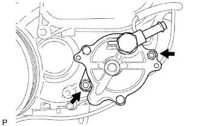 |
Отверните 2 гайки и снимите вакуумный насос и 2 кольцевых уплотнения.
| 17. СНИМИТЕ ЛОПАСТНОЙ НАСОС В СБОРЕ |
 |
Отверните 2 гайки и снимите лопастной насос и кольцевое уплотнение.
| 18. СНИМИТЕ ДАТЧИК ПОЛОЖЕНИЯ РАСПРЕДВАЛА |
 |
Выверните болт и снимите датчик положения распредвала.
| 19. СНИМИТЕ ДАТЧИК ПОЛОЖЕНИЯ КОЛЕНЧАТОГО ВАЛА |
Отсоедините разъем датчика положения коленчатого вала.
| 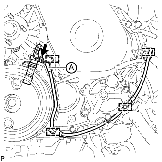 |
Снимите зажим, обозначенный A на рисунке.
Освободите 3 зажима жгута проводов, выверните болт и снимите датчик положения коленчатого вала.
| 20. СНИМИТЕ КЛАПАН-ПЕРЕКЛЮЧАТЕЛЬ ДАВЛЕНИЯ МАСЛА В СБОРЕ |
 |
Выверните болт и снимите клапан-переключатель давления масла.
| 21. СНИМИТЕ ШКИВ КОЛЕНЧАТОГО ВАЛА |
 |
Используя SST, зафиксируйте шкив коленчатого вала и ослабьте болт шкива.
| 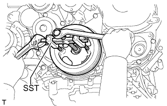 |
С помощью SST выверните болт шкива и снимите шкив коленчатого вала.
| 22. СНИМИТЕ ВАКУУМНУЮ ТРУБКУ № 1 В СБОРЕ |
| 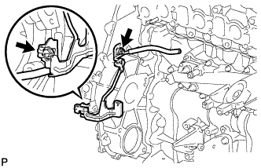 |
Выверните болт, отверните гайку и отсоедините вакуумную трубку № 1.
| 23. СНИМИТЕ КРЫШКУ МАСЛЯНОГО ПОДДОНА № 1 В СБОРЕ |
| 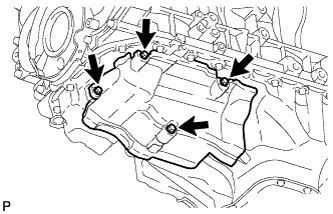 |
Выверните 4 болта и снимите крышку масляного поддона № 1.
| 24. СНИМИТЕ ЗУБЧАТОЕ КОЛЕСО РАСПРЕДВАЛА |
 |
Выверните болт зубчатого колеса распредвала, удерживая распредвал ключом.
Снимите зубчатое колесо распредвала.
| 25. СНИМИТЕ КРЫШКУ РЕМНЯ ГАЗОРАСПРЕДЕЛЕНИЯ № 2 |
 |
Выверните 4 болта и гайки и снимите крышку ремня газораспределения № 2.
| 26. СНИМИТЕ НАСОС СИСТЕМЫ ОХЛАЖДЕНИЯ В СБОРЕ |
| 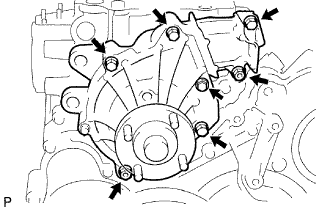 |
Выверните 5 болтов, отверните 2 гайки и снимите насос системы охлаждения и прокладку.
| 27. СНИМИТЕ КРЫШКУ ГАЗОРАСПРЕДЕЛИТЕЛЬНОГО МЕХАНИЗМА |
| 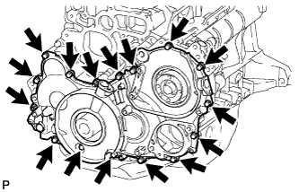 |
Выверните 14 болтов и отверните 2 гайки.
| 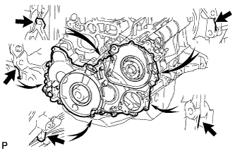 |
Подденьте крышку газораспределительного механизма в местах, показанных на рисунке, и снимите ее.
 |
Снимите 3 кольцевых уплотнения с картера газораспределительного механизма.
| 28. СНИМИТЕ ШЕСТЕРНЮ НАСОСА ВЫСОКОГО ДАВЛЕНИЯ |
 |
Закрепите вспомогательную промежуточную шестерню № 2 на промежуточной шестерне № 1 с помощью технологического болта.
 |
Снимите шестерню насоса высокого давления.
| 29. СНИМИТЕ ЗУБЧАТЫЙ ДИСК ДАТЧИКА ПОЛОЖЕНИЯ КОЛЕНЧАТОГО ВАЛА № 1 |
 |
Снимите диск зубчатый диск датчика положения коленчатого вала № 1.
| 30. СНИМИТЕ ВЕДУЩЕЕ ЗУБЧАТОЕ КОЛЕСО КОЛЕНЧАТОГО ВАЛА |
| 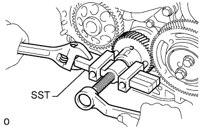 |
С помощью SST снимите ведущее зубчатое колесо коленчатого вала.
| 31. СНИМИТЕ УПОРНЫЙ ДИСК ПРОМЕЖУТОЧНОЙ ШЕСТЕРНИ |
| 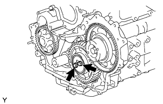 |
Выверните 2 болта и снимите упорный диск промежуточной шестерни.
| 32. СНИМИТЕ ПРОМЕЖУТОЧНУЮ ШЕСТЕРНЮ № 1 |
 |
Снимите промежуточную шестерню № 1 вместе со вспомогательной промежуточной шестерней № 2.
| 33. СНИМИТЕ ВАЛ ПРОМЕЖУТОЧНОЙ ШЕСТЕРНИ № 1 |
 |
Снимите вал промежуточной шестерни № 1.
| 34. СНИМИТЕ ПОДДОН КАРТЕРА № 2 В СБОРЕ |
| 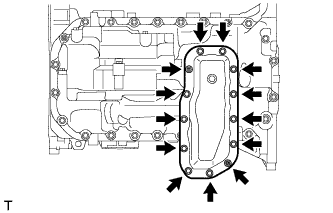 |
Выверните 11 болтов и отверните 2 гайки.
| 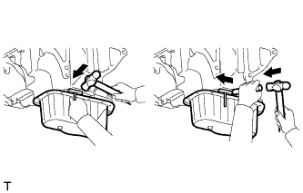 |
Вставьте лезвие инструмента для обрезки прокладки поддона картера между масляными поддонами. Срежьте нанесенный герметик и снимите масляный поддон № 2 в сборе.
| 35. СНИМИТЕ МАСЛОПРИЕМНИК С СЕТЧАТЫМ ФИЛЬТРОМ В СБОРЕ |
 |
Отверните 2 гайки и снимите маслоприемник с сетчатым фильтром и прокладку.
| 36. СНИМИТЕ МАСЛЯНЫЙ ПОДДОН В СБОРЕ |
 |
Выверните 22 болта и отверните 2 гайки.
| 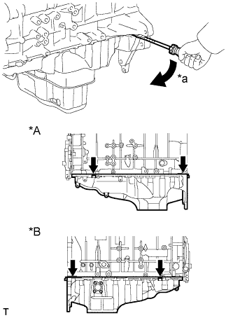 |
С помощью отвертки отделите масляный поддон, используя ее в качестве рычага в определенных местах между блоком цилиндров и масляным поддоном, как показано на рисунке.
| *A | Левая сторона |
| *B | Правая сторона |
| *a | Подденьте |
 |
Снимите прокладку.
| 37. СНИМИТЕ КАРТЕР ГАЗОРАСПРЕДЕЛИТЕЛЬНОГО МЕХАНИЗМА В СБОРЕ |
| 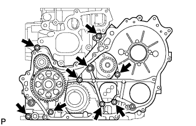 |
Выверните болт-штуцер и 8 болтов.
 |
Подденьте картер газораспределительного механизма в месте, показанном на рисунке, и снимите картер механизма и прокладку.
 |
Снимите 2 кольцевых уплотнения.